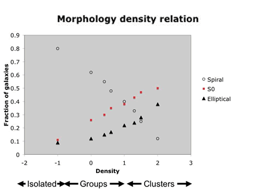

The morphology density relation is an observationally determined relationship between the morphological types (Hubble types) of galaxies and the environments in which they are located (in particular, how many galaxies per cubic megaparsec are found in the neighbourhood).
Specifically, the morphology density relation indicates that early-type (elliptical and S0) galaxies are preferentially located in high density environments, while late-type galaxies are preferentially located in low density environments. Hence, spiral galaxies are rare in the high densities of clusters and are common in isolation (and in the lower density group environment). Early-type galaxies, on the other hand, are common in clusters and are rarely found in isolation.
The morphology density relation is believed to indicate that galaxy evolution is affected by the environment in which the galaxy finds itself. Specifically, there is strong evidence to suggest that star formation is suppressed when galaxies enter high density environments such a clusters. This suppression of star formation is not well understood, and a number of processes (including ram pressure stripping, galaxy strangulation and galaxy harassment) have been proposed to account for it.